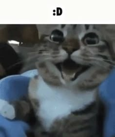

Supongo que estás aquí porque decidiste que no quieres hablar más conmigo,
lo entiendo y respeto aunque me duela, así que decidí hacer esta página de despedida
para inmortalizar esta linda epoca de mi vida junto a ti en el internet, espero que te guste c:
Gracias por todo <3

Quiero que sepas que siempre estaré aquí para ti, aunque no hablemos.
Si algún día decides volver a hablar, jugar o hacer cualquier otra cosa, estaré siempre disponible
Ahora, he decidido dedicarte esta pagína a ti 💕, a lo largo de esta página verás varias cosas sobre ti y
nosotros en general, como esta imagen de un gato, porque sé que te gustan los gatos y me recuerda a ti cada vez que veo uno xd
Banda sonora 🔥
hice una pequeñita playlist con canciones que me recuerdan a ti
espero que te guste y que te traiga buenos recuerdos de nosotros, son 9 cancioncitas, aquí te la dejo mediante
YouTube :3
entre otras cosas...
tiempo transcurrido desde que nos conocimos aproximadamente 😊
Cargando...
Este contador nos dice cuánto tiempo ha pasado desde que nos conocimos, ahora me doy cuenta de que fue
mas breve de lo que pensaba...
que puedo decir... El muñeco que me regalaste siempre me acompañará, de alguna forma me hace sentir que te tengo cerca